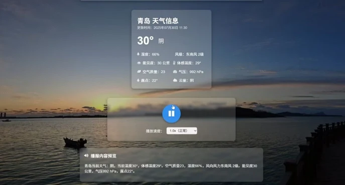
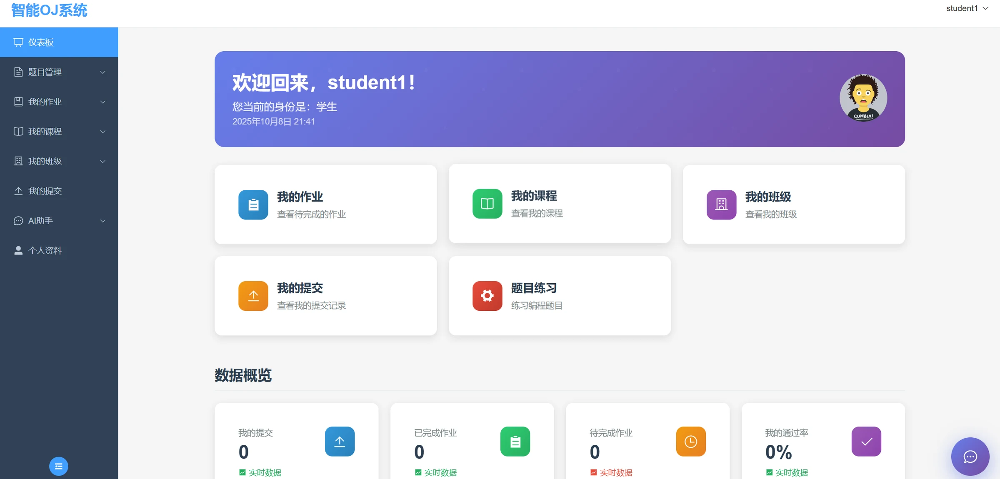
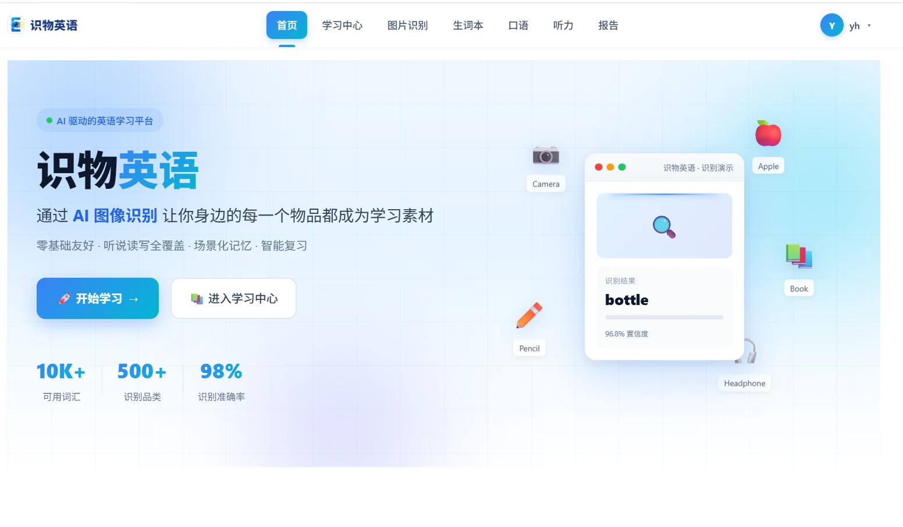
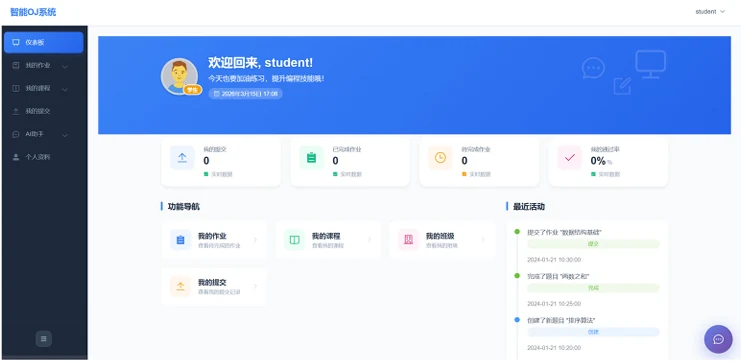
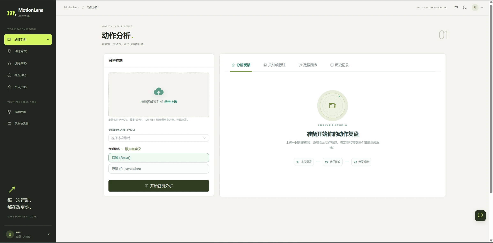
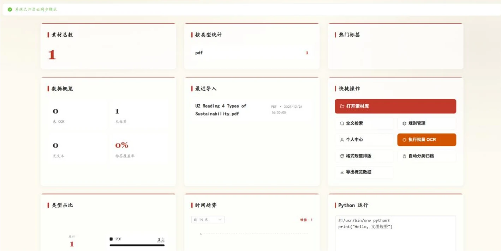
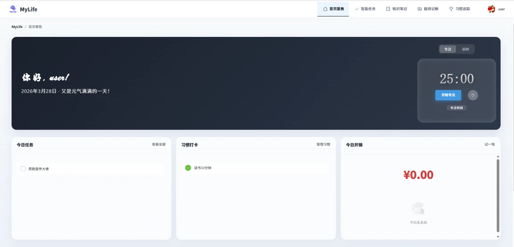
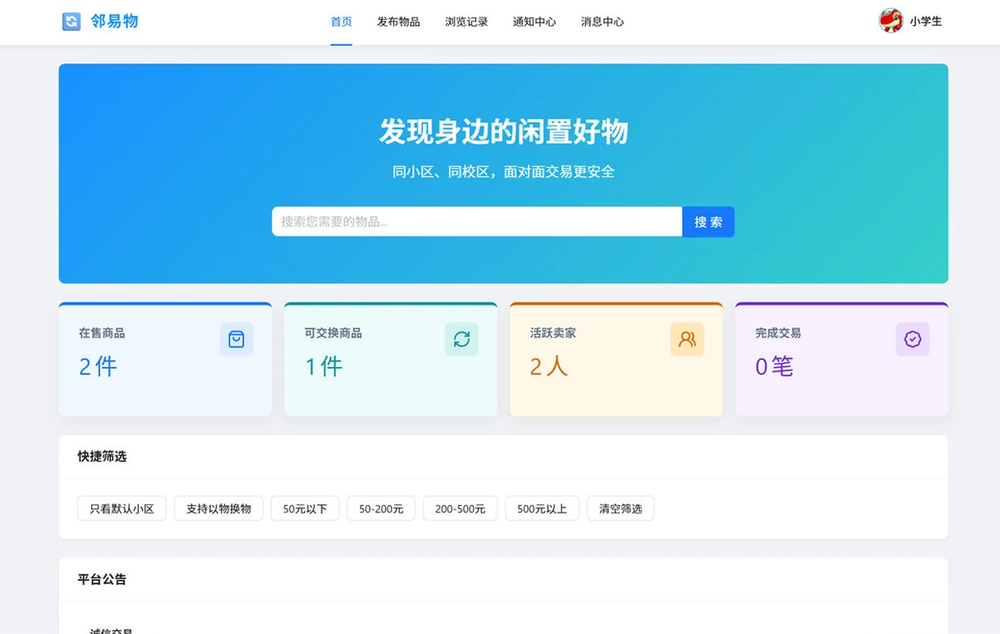
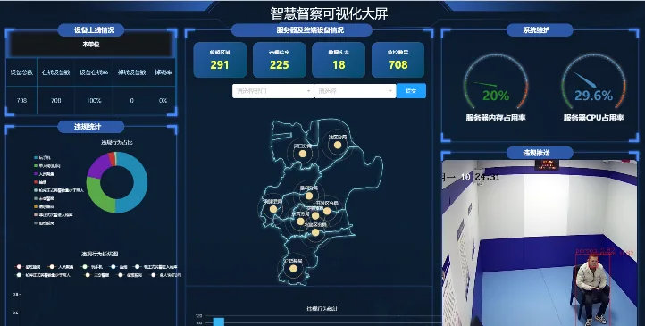

PROJECTS
项目成果
覆盖智能教育、计算机视觉、数据应用和生活服务的系统实践。
风和气象
聚合多源权威气象数据，提供未来与历史天气查询、趋势图、卫星与雷达云图，并通过语音播报和智能穿衣建议服务日常出行。
- 实时、未来与历史数据聚合
- 温度和风力趋势可视化
- 语音播报与穿衣建议

智能 OJ 系统
面向编程教育的在线评测平台，支持学生、教师、管理员三类角色，将课程、题库、作业、代码评测与学习数据纳入统一流程。
- Python、C++、Java 沙箱评测
- 多题型作业与 AI 主观题评分
- 智能出题、错题本与讨论区

识物英语
基于目标检测的情境化英语学习平台，从生活图片中识别物体并给出中英释义与音标，让视觉认知自然衔接词汇学习与复习反馈。
- 目标识别与可视化标注
- 词汇测验、听写与口语跟读
- 生词本与学习报告

UPCOJ
面向高校程序设计与数据分析课程的在线测评系统，在传统代码判题之外支持函数断言、图片与动态图表等综合实践题型。
- Monaco 在线编程与多语言评测
- JudgeAssert 断言式判分
- AI 辅助、多媒体判题与成绩分析

MotionLens
利用人体关键点识别分析训练视频，为深蹲、演讲姿态等动作呈现关键帧、关节角度曲线，并给出可执行的改进建议。
- 动作识别与自定义分析模式
- 关键帧、角度曲线与评估结果
- 训练、饮食、BMI 与社区激励

文墨规整
面向学习与办公资料的智能素材管理系统，将多格式导入、OCR 识别、文本规整、标签分类、检索和导出整合进统一工作流。
- 图片与扫描件文字识别
- 规则标签与素材检索
- 统计图表与多格式导出

MyLife Dashboard
将任务、笔记、记账和习惯打卡集中在统一生活面板中，以每日聚焦视图和番茄钟帮助用户安排学习节奏与个人生活。
- 循环任务与子任务管理
- Markdown 笔记与收支统计
- 习惯打卡、番茄钟与每日概览

邻易物
服务社区与校园场景的二手物品交易系统，串联商品发布、分类检索、即时沟通、交易评价以及后台审核治理。
- 多条件检索、收藏与浏览记录
- 站内聊天、交易与评价
- 商品审核、举报与公告管理

RESEARCH TRAINING · TEAM PROJECT
科研训练：公安执法大模型与“智筑安盾”系统
围绕公安执法监督场景研发专用大模型与“智筑安盾”（智慧督察）系统，构建智能化执法监督体系，服务新质公安战斗力建设。课题通过警校合作共建“数矩”监督联合实验室，开展大模型赋能研讨会，相关工作获《人民公安报》等媒体报道。
注：以上为课题团队整体应用成效，本人作为学生成员参与系统开发与研究工作。

PORTFOLIO SUMMARY
8 个系统项目，3 项软件著作权
项目材料持续整理中；软著数量按已确认信息单独统计。